画面下の「公営入力」から、競技・場・レース番号・券種・金額を入れて保存します。買い目の入力は任意です。パチンコ・スロットは「パチ入力」から。
中央競馬・地方競馬の投票結果は、スクショ取込でまとめて登録できます（後述）。
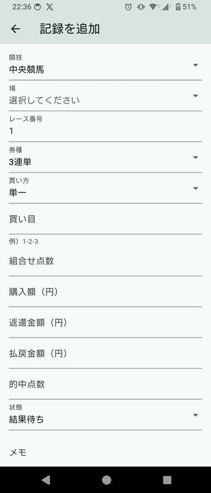
記録した日は、プラスの日が緑・マイナスの日が赤で色づきます。月の収支と「打った日」の日数がひと目でわかります。
日付をタップすると、その日の記録一覧が開きます。
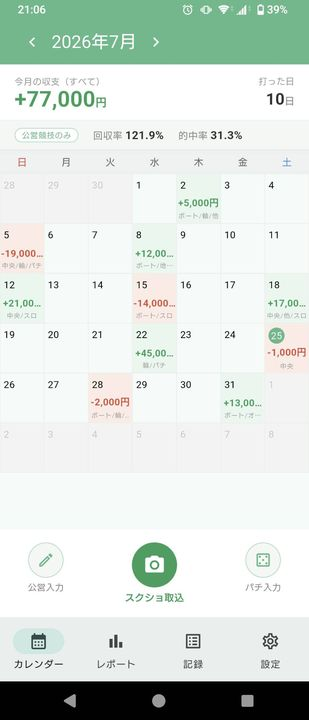
累積収支の推移と月別の収支をグラフで確認できます。
公営・パチ・簡易・すべて、のタブで対象を切り替えられます。
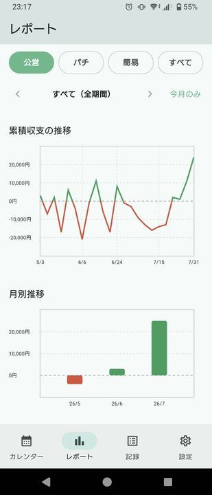
IPAT（JRA／NAR）の「照会結果一覧」画面のスクリーンショットを選ぶと、内容を自動で読み取ります。複数枚まとめて選べます。
画像は端末の中だけで処理され、外部には送信されません。
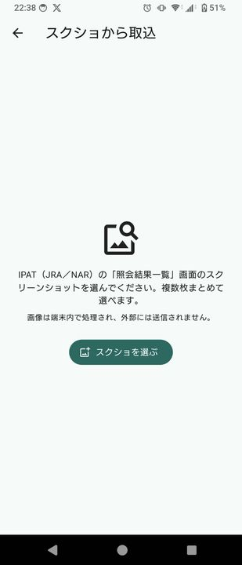
読み取り結果は保存前に必ず確認画面が出ます。日付など推定した項目は赤字で注意が表示されるので、確認・修正してから保存してください。
チェックを入れた記録だけが保存されます。
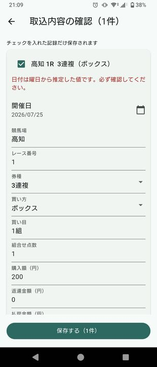
日付・種別（パチンコ／スロット）・店を選び、現金の投資と回収を入れて保存します。貯玉・貯メダルを使った分も記録でき、店ごとの残高と交換率を管理できます。
レートが違う場合は店を分けて登録してください（例：〇〇店 10スロ／〇〇店 20スロ）。
「詳細を追加」から時刻・機種・写真なども残せます。
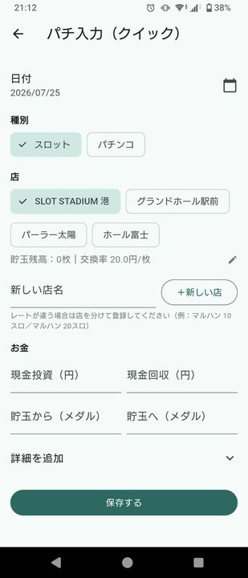
機種名の入力欄をタップすると、機種を検索して選べます。
ひらがな・カタカナ・略称（例:「沖海」）でも検索できます。
一覧に無い機種は、そのまま自由に入力してもかまいません。
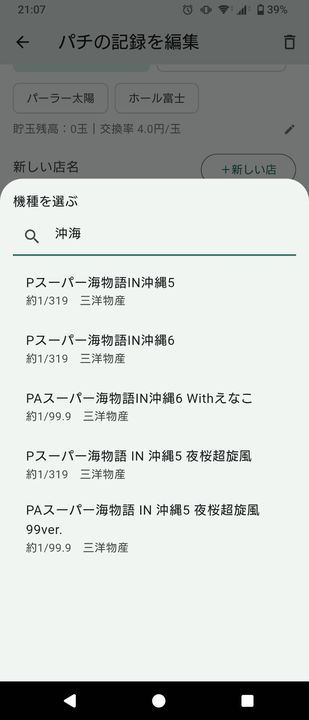
記録タブでは、公営・パチ・簡易を切り替えて一覧できます。
競技や券種のチップをタップすると絞り込みができ、件数・収支合計・回収率・的中率が上部にまとまって表示されます。
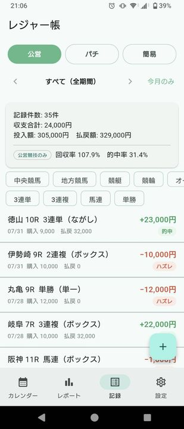
パチの一覧では、平均時給と勝ち日率も確認できます。
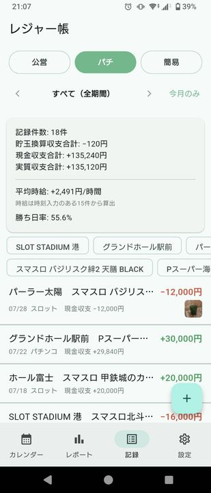
カレンダーの日付をタップすると、その日の記録が一覧で開きます。
それぞれの収支と結果（的中・ハズレなど）が確認でき、この画面からも公営入力・パチ入力・簡易入力を追加できます。
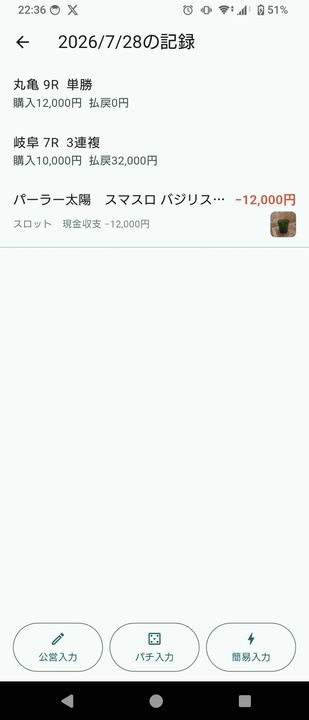
設定の「データのエクスポート」から、いつでも無料で全件書き出せます。
機種変更のときは、バックアップJSONを新しい端末に移して復元してください。
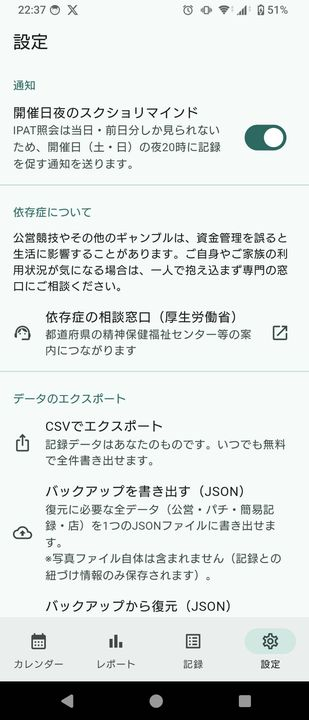
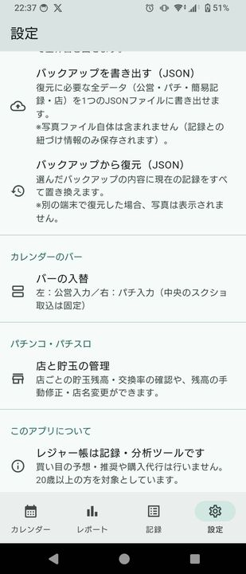
A. すべて端末の中に保存されます。記録データが外部に送信されることはありません。
A. 不要です。インストールしてすぐ使えます。
A. 記録・集計・書き出しは、すべて無料です。
A. IPAT（JRA／NAR）の「照会結果一覧」画面に対応しています。読み取りは端末内で行われ、画像が外部に送信されることはありません。
A. 自由入力でそのまま記録できます。機種データは今後の更新で追加していきます。
A. 設定からバックアップ（JSON）を書き出し、新しい端末で復元してください。写真ファイルは移行されません（記録との紐づけ情報のみ保存されます）。
A. レジャー帳は記録・分析ツールです。買い目の予想・推奨や購入代行は行いません。20歳以上の方を対象としています。
A. info@leisurecho.com までご連絡ください。